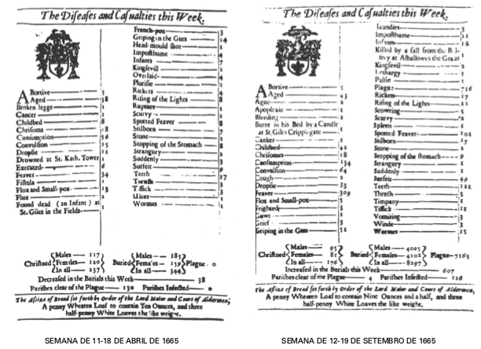

Tábuas de Mortalidade
As Tábuas de Mortalidade
As tábuas de mortalidade são instrumentos muito utilizados em diversas ciências como a demografia as ciências atuariais por exemplo. Conforme afirma Preston (2001, p.38), a tábua de mortalidade é uma tabela que mostra informações sobre a mortalidade de uma coorte. Em sua forma clássica, a primeira coluna desta tabela representa a idade (em anos) de uma coorte e todas as outras colunas representam funções relacionadas à mortalidade, como o número de sobreviventes em determinadas idades, taxas de mortalidade por idade, mortes em intervalos de idade etc. A tábua de mortalidade, também conhecida na literatura como tábua de vida, é uma maneira de modelar a mortalidade de uma coorte.
- Idade (em anos) de uma coorte
- O número de sobreviventes em determinadas idades
- Taxas de mortalidade por idade
- Mortes em intervalos de idade etc
Apenas para ilustrar a importância deste tipo de instrumento, é através dele que se obtém as informações sobre a expectativa de vida em determinada idade. Estas por sua vez, são utilizadas para realizar projeções populacionais e com isso, é possível discutir por exemplo, os atuais problemas previdenciários. Além disso, é conveniente lembrar que muitos produtos atuariais têm seus cálculos baseados nas informações presentes nas tábuas de mortalidade.
O surgimento
A história das tábuas de mortalidade se relaciona com a própria história do risco, que por sua vez contempla o desenvolvimento da estatística e as teorias da probabilidade. Entretanto, nem sempre a estatística foi relacionada com a demografia. Antes do século XVI por exemplo, estas eram disciplinas totalmente separadas.
Em 1662 foi publicado o livro Observações naturais e políticas sobre os registros de óbito, cujo autor era John Graunt, um comerciante inglês. Graunt reuniu dados de nascimentos e mortes em Londres no período entre 1604 e 1661, e além destes dados seu livro trouxe suas interpretações. A obra de Graunt foi de extrema importância para o desenvolvimento do cálculo das probabilidades e para os métodos de amostragem.
Como bom comerciante, o principal objetivo de Graunt era saber quantas pessoas haviam em Londres e suas características, como sexo, idade, religião, estado, profissão etc. e assim, possivelmente elaborar estratégias para seus negócios. Dados sobre nascimentos e mortes já eram registrados pela igreja há muito tempo mas não eram disponibilizados.
No século XVII Londres enfrentava um processo significativo de crescimento econômico e populacional. Assim, Graunt percebeu que suas estatísticas representavam apenas uma pequena parte de todos os nascimentos e mortes que ocorriam. Ainda assim, ele conseguiu chegar a muitas conclusões sobre seus dados, com a maior precisão possível que seus conhecimentos e ferramental permitiam na época. Este tipo de análise é conhecida atualmente como inferência estatística, que consiste em inferir uma estimativa para uma população com base em uma amostra.

Fonte: Desafio aos Deuses, p.94
Graunt, mesmo sem saber, foi considerado como um dos cocriadores da ciência estatística devido a importância de seu trabalho. Uma curiosidade sobre a palavra estatística é que sua etimologia nos mostra que seu significado é uma análise de fatos quantitativos sobre o Estado.
Outro personagem de extrema importância tanto para a história da administração do risco quanto para outras ciências como a astronomia, foi o cientista Edmund Halley. No final do século XVII, Halley realizou um estudo mais aprofundado do que Graunt havia feito. Umas das especificidades de seu trabalho é que ele decompõe os dados populacionais em uma distribuição etária. De acordo com Halley, essa tabela gerava informações úteis até para o governo, como por exemplo o número de homens aptos a prestar serviço militar. Além disso, a tabela informava sobre qual a probabilidade de uma pessoa de idade x morrer após algum número de anos, em outras palavras, sua tabela já apresentava os cálculos de esperança de vida em cada idade.
Dessa forma, a tabela de Halley se tornou de fundamental importância para o mercado de seguros. Com as probabilidades de vida e morte de cada idade era possível então precificar de maneira economicamente justa produtos atuariais, como seguros de vida e anuidades. As tabelas que continham as expectativas de vida desenvolvidas por Halley foram publicadas em 1693, entretanto, apenas um século mais tarde os governos e as seguradoras passaram a considerá-las em seus cálculos. Sua utilização prévia poderia ter evitado problemas econômicos para os governos, relacionados a previdência.
A composição de uma tábua de mortalidade
As tábuas de mortalidade são tabelas compostas por dez colunas, em que a primeira delas é a coluna das idades. Devido à algumas diferenças comportamentais e, em alguns casos até biológicas, existem tábuas de mortalidade que diferem o sexo feminino e masculino. Ou seja, mulheres e homens atravessam ao longo da vida, diferentes riscos de morte em todas as idades. Isso justifica a diferença de preços em produtos atuariais para ambos os sexos. Mesmo com tais diferenças, existem tábuas de mortalidade que são construídas sem diferenciar o gênero.
A segunda coluna de uma tábua de mortalidade é a probabilidade de morte à idade x e x+n, representada por nqx. É calculada através da relação entre o número de óbitos observados no intervalo de idade x e x+n, representado por (nDx) e o total da população neste intervalo de idade, representado por nlx. Ou seja:
Outra coluna importante é a que diz respeito ao tempo médio vivido no intervalo etário pelos que morreram no intervalo x e x+n, representado por nax. É encontrado através da divisão do total do número de pessoas-ano vividos no intervalo x e x+n pelo total pessoas que morreram neste mesmo intervalo, ou seja:
Para o cálculo da coluna anterior, é necessário a coluna nLx, que representa o número de pessoas-anos que viveram entre as idades x e x+n. Esta é uma coorte hipotética que significa tempo a ser vivido pelos sobreviventes da coorte na idade x, entre esta idade e o início do próximo grupo etário. Então:
em que nAx representa o número de pessoas-ano vividos no intervalo pelos membros da coorte que morreram neste intervalo.
Assim, uma maneira de se obter nDx é então:
A próxima coluna representa o tempo a ser vivido da coorte de idade x até que esta coorte se extinga, representada por Tx. É o número de pessoas-ano vividos a partir da idade x. É calculada por:
Por fim, com todas as colunas anteriores é possível agora calcular a esperança de vida à idade x, representada por e°x:
A união destas seis colunas resulta nas tábuas de mortalidade atualmente utilizadas para diferentes áreas da ciência. Abaixo segue uma pequena da tábua completa de mortalidade - Ambos os Sexos - 2016, do Brasil disponibilizada pelo IBGE.
| Idade | nqx × 1000 | nDx | lx | nLx | Tx | e°x |
|---|---|---|---|---|---|---|
| 20 | 1,380 | 135 | 97665 | 97598 | 5611172 | 57,5 |
| 21 | 1,477 | 144 | 97530 | 97458 | 5513574 | 56,5 |
| 22 | 1,543 | 150 | 97386 | 97311 | 5416116 | 55,6 |
| ... | ... | ... | ... | ... | ... | ... |
Normalmente as tábuas de mortalidade disponibilizadas não exibem as funções nax, nmx e npx. Obs.: npx = 1 - nqx.
Em demografia, as probabilidades de morte entre uma pessoa de idade x e x+n anos (nqx) normalmente são multiplicadas por mil afim de que os valores se tornem mais interpretáveis. Por exemplo, na tabela acima a cada mil pessoas entre 20 e 21 anos, a ocorrência de morte era de 1,38 pessoas no ano de 2016. Entretanto, para cálculos atuariais, estes devem continuar sendo valores probabilísticos e, então, a interpretação seria: a probabilidade de uma pessoa de 21 anos morrer antes de completar 22 anos, segundo esta tabela é de 1,380/1000 = 0,00138, o que significa (por obviedade) que a probabilidade dessa mesma pessoa chegar viva aos 22 anos é de 1 - 0,00138 = 0,99862 = 1p22.
Uma observação a ser feita é que a construção de uma tábua de mortalidade é muito parecida com a construção das tabelas que atuários antigamente utilizavam, devido a impotência computacional, para realizar as técnicas de comutação.
Tábuas de mortalidade no Brasil
As tábuas de mortalidade no Brasil são construídas e disponibilizadas anualmente pelo Instituto Brasileiro de Geografia e Estatística - IBGE desde o ano de 1999, em cumprimento ao Artigo 2º do Decreto Presidencial nº 3.266, de 29 de novembro de 1999:
De acordo com o IBGE, nas tábuas de mortalidade guardam informações de condições sociais da população, como sanitárias, de saúde e de segurança. Assim, este material também tem sua importância para o desenvolvimento de políticas sociais voltadas a sociedade.
Em cada divulgação feita pelo IBGE, também está contida a interpretação dos resultados. Além disso, o instituto também disserta sobre a evolução da mortalidade no Brasil e traz alguns resultados separados por estados brasileiros.
Classificação das tábuas de mortalidade
Algumas tábuas de mortalidade são construídas sob a organização de alguns aspectos específicos da população estudada, como sexo, tipo de seguro, grupo de risco etc., e além disso por diferentes métodos. Assim, tábuas de mortalidade são classificadas de acordo com algumas dessas especificidades.
As tábuas contemporâneas são tábuas cuja população é fictícia, normalmente 100.000 indivíduos e é sujeita as condições de mortalidade observadas para cada idade num determinado período de tempo. Se as informações são referentes a um único ano de calendário, define-se tábuas anuais. Se as probabilidades são construídas com base na média de dois ou mais anos, denomina-se tábuas plurianuais.
As tábuas geracionais, também chamadas de longitudinais, têm suas probabilidades calculadas com base num grupo de indivíduos (coorte) nascidos no mesmo ano. Para que isso aconteça, deve-se acompanhar estes indivíduos desde o seus nascimentos até as suas mortes.
Uma outra classificação refere-se à forma com que estão dispostos os intervalos de idade na tábua. Tábuas completas contém dados para cada idade singular, desde o nascimento até o limite superior. Tábuas abreviadas formam grupos de idade.
Há também a classificação por idades de seleção. Tábuas selecionadas são tábuas em que as probabilidades são realizadas considerando a idade do indivíduo. Tábuas finais "correspondem à última coluna de uma tábua selecionada, ou seja, aquela em que se admite que a duração (ou período de seleção) deixa de ter efeito sobre a mortalidade" (Bravo, 2007).
Quanto ao tempo, as tábuas também podem ser estáticas, ou seja, todas as funções da tábua dizem respeito apenas a idade x. E ainda, podem ser tábuas dinâmicas, que as funções são indexadas, em linha, pela idade biológica e, em coluna, pelo ano de calendário (tempo cronológico).